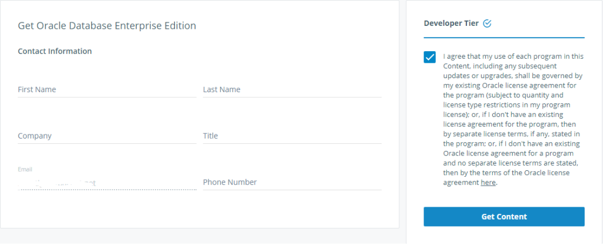

Did you notice that each time you want to download the Oracle binaries from the OTN website (for non-production usage) you have to click on the “Accept License Agreement”? This is because you have to agree with the OTN license agreement, and that makes it not easy to distribute an automated way to build an environment. The only exception I have seen was the sealed envelopes provided for the RACattack:
Software is provided for @ludodba #racattack thanks to @OracleRACpm pic.twitter.com/1GQTVVn2BS
— Franck Pachot (@FranckPachot) September 17, 2015
In both cases, there must be a physical action involved to agree legally with the license terms.
There is now a new possibility where you click on ‘Agree’ only once, in the Docker Store, and then can download (aka ‘pull’) a container containing the binary distribution. You just go to: https://store.docker.com/images/oracle-database-enterprise-edition, login (you can create one in two minutes with a username, e-mail address, and password) and accept the license agreement: 
Once this is done, you will be able to pull the Oracle containers from the command line, after a ‘docker login’.
It may not be easy to use Docker on your laptop, especially in you are on Windows and don’t want to enable Hyper-V. Here is how I run it on a VirtualBox VM running Oracle Enterprise Linux. You may wonder what’s the point to run containers within a VM. But I think that you don’t have the choice here. The docker processes will run within the host. This means that you need an OS that is supported (and Oracle Enterprise Linux is the best fitted to run Oracle Database). This also means that you also need to adapt the kernel parameters for it, shm, limits, have the oracle user, etc. Better to do that in a VM dedicated for Oracle Database.
Then you wonder what’s the point of running in a container, given that you have to do all those installation prerequisites anyway, and installing Oracle is just two more commands (runInstaller and dbca). Well, it seems that the main reason is that it’s cool. In my opinion, any user of database (from developer to administrator) should have installed an Oracle Database at least with the DBA GUI, because it is a good way to understand what is a database, a listener, a datafile, the characterset,… But let’s be cool and pull it instead of install it.
Docker evolves quickly, I remove old releases just in case:
[root@localhost oracle]# yum -y remove docker-ce docker docker-common docker-selinux docker-engine Loaded plugins: ulninfo No Match for argument: docker-ce No Match for argument: docker No Match for argument: docker-common No Match for argument: docker-selinux No Match for argument: docker-engine No Packages marked for removal
I’m on the latest OEL7:
[oracle@localhost ~]$ cat /etc/oracle-release Oracle Linux Server release 7.4 [root@localhost oracle]# yum upgrade Loaded plugins: ulninfo No packages marked for update [oracle@localhost ~]$ uname -a Linux localhost.localdomain 4.1.12-103.10.1.el7uek.x86_64 #2 SMP Tue Dec 5 15:42:37 PST 2017 x86_64 x86_64 x86_64 GNU/Linux
I don’t want docker to fill my / filesystem, and those images with an Oracle Database are big, so I’m creating a link from /var/lib/docker to /u01
[root@localhost oracle]# mkdir /u01/docker [root@localhost oracle]# ln -s /u01/docker /var/lib/docker [root@localhost oracle]# ls -ld /var/lib/docker lrwxrwxrwx. 1 root root 11 Dec 10 15:48 /var/lib/docker -> /u01/docker
Installing Docker (Community Edition):
[root@localhost oracle]# yum -y install docker-ce Loaded plugins: ulninfo docker-ce-stable | 2.9 kB 00:00:00 ol7_UEKR4 | 1.2 kB 00:00:00 ol7_addons | 1.2 kB 00:00:00 ol7_latest | 1.4 kB 00:00:00 docker-ce-stable/x86_64/primary_db | 10 kB 00:00:00 (1/7): ol7_UEKR4/x86_64/updateinfo | 135 kB 00:00:00 (2/7): ol7_addons/x86_64/updateinfo | 40 kB 00:00:00 (3/7): ol7_addons/x86_64/primary | 78 kB 00:00:00 (4/7): ol7_latest/x86_64/group | 681 kB 00:00:00 (5/7): ol7_latest/x86_64/updateinfo | 1.6 MB 00:00:02 (6/7): ol7_UEKR4/x86_64/primary | 25 MB 00:00:25 (7/7): ol7_latest/x86_64/primary | 31 MB 00:00:26 ol7_UEKR4 506/506 ol7_addons 251/251 ol7_latest 23517/23517 Resolving Dependencies --> Running transaction check ---> Package docker-ce.x86_64 0:17.09.1.ce-1.el7.centos will be installed --> Processing Dependency: container-selinux >= 2.9 for package: docker-ce-17.09.1.ce-1.el7.centos.x86_64 --> Running transaction check ---> Package container-selinux.noarch 2:2.21-1.el7 will be installed --> Finished Dependency Resolution Dependencies Resolved ============================================================================================================================================================================================== Package Arch Version Repository Size ============================================================================================================================================================================================== Installing: docker-ce x86_64 17.09.1.ce-1.el7.centos docker-ce-stable 21 M Installing for dependencies: container-selinux noarch 2:2.21-1.el7 ol7_addons 28 k Transaction Summary ============================================================================================================================================================================================== Install 1 Package (+1 Dependent package) Total download size: 21 M Installed size: 76 M Is this ok [y/d/N]: y Downloading packages: (1/2): container-selinux-2.21-1.el7.noarch.rpm | 28 kB 00:00:01 (2/2): docker-ce-17.09.1.ce-1.el7.centos.x86_64.rpm | 21 MB 00:00:07 ---------------------------------------------------------------------------------------------------------------------------------------------------------------------------------------------- Total 2.7 MB/s | 21 MB 00:00:07 Running transaction check Running transaction test Transaction test succeeded Running transaction Installing : 2:container-selinux-2.21-1.el7.noarch 1/2 Installing : docker-ce-17.09.1.ce-1.el7.centos.x86_64 2/2 Verifying : docker-ce-17.09.1.ce-1.el7.centos.x86_64 1/2 Verifying : 2:container-selinux-2.21-1.el7.noarch 2/2 Installed: docker-ce.x86_64 0:17.09.1.ce-1.el7.centos Dependency Installed: container-selinux.noarch 2:2.21-1.el7 Complete!
Starting Docker:
[root@localhost oracle]# systemctl start docker
I have to login with my credentials. This is the way to connect with the agreement I accepted online:
[root@localhost oracle]# docker login Login with your Docker ID to push and pull images from Docker Hub. If you don't have a Docker ID, head over to https://hub.docker.com to create one. Username: franck.pachot Password: Login Succeeded
Then I pull the docker container provided by Oracle. Oracle software is quit large when including all features, so I choose the ‘slim’ one:
[root@localhost oracle]# docker pull store/oracle/database-enterprise:12.2.0.1-slim 12.2.0.1-slim: Pulling from store/oracle/database-enterprise 4ce27fe12c04: Pull complete 9d3556e8e792: Pull complete fc60a1a28025: Pull complete 0c32e4ed872e: Pull complete be0a1f1e8dfd: Pull complete Digest: sha256:dbd87ae4cc3425dea7ba3d3f34e062cbd0afa89aed2c3f3d47ceb5213cc0359a Status: Downloaded newer image for store/oracle/database-enterprise:12.2.0.1-slim [root@localhost oracle]#
Here is the image:
[root@localhost oracle]# docker images REPOSITORY TAG IMAGE ID CREATED SIZE store/oracle/database-enterprise 12.2.0.1-slim 27c9559d36ec 3 months ago 2.08GB
To run a database, you just have to run the container. In order to connect to it, you need to forward the 1521 port:
[root@localhost oracle]# docker run -p 0.0.0.0:9001:1521 store/oracle/database-enterprise:12.2.0.1-slim Setup Oracle Database Oracle Database 12.2.0.1 Setup Sun Dec 10 19:09:14 UTC 2017 Check parameters ...... log file is : /home/oracle/setup/log/paramChk.log paramChk.sh is done at 0 sec untar DB bits ...... log file is : /home/oracle/setup/log/untarDB.log
Ok. This takes some time. The ORACLE_HOME is unzipped, then the database created…
I’ll not describe further. Just go to the Setup Instructions in https://store.docker.com/images/oracle-database-enterprise-edition where everything is clearly explained.
In my opinion, it is good to try and think about it. Docker was created to containerize an application with process(es) and memory. A database is a different beast. The database is persistent, so you should store it in an external volume, because you don’t want to create a new empty database each time you start it. There are also the configuration files which should be persistent: should they belong to the container or be external? And the logs under ORACLE_BASE_DIAG? Do you want to keep them? purge them? Or just let the image grow, which can be very quick if you fill the Recovery Area. Finally, do you want to run a container into a Virtual Machine, this container running Oracle Database 12c, which is a Container Database (CDB), itself containing containers (PDBs)? Personally, I’m very skeptical about the usage of docker for an Oracle Database. But I also gave it an early try some years ago (read here). And you may see things differently in your context. The very good point is that Oracle now provides an easy way to test whether it helps you to run a database quickly or not, with a way to get the binaries without an ‘accept’ click for each download.
Here is the link to Gerald Venzl presentation on Best Practices for Oracle on Docker: https://www.slideshare.net/gvenzl/oracle-database-on-docker-best-practices
{kind=link}